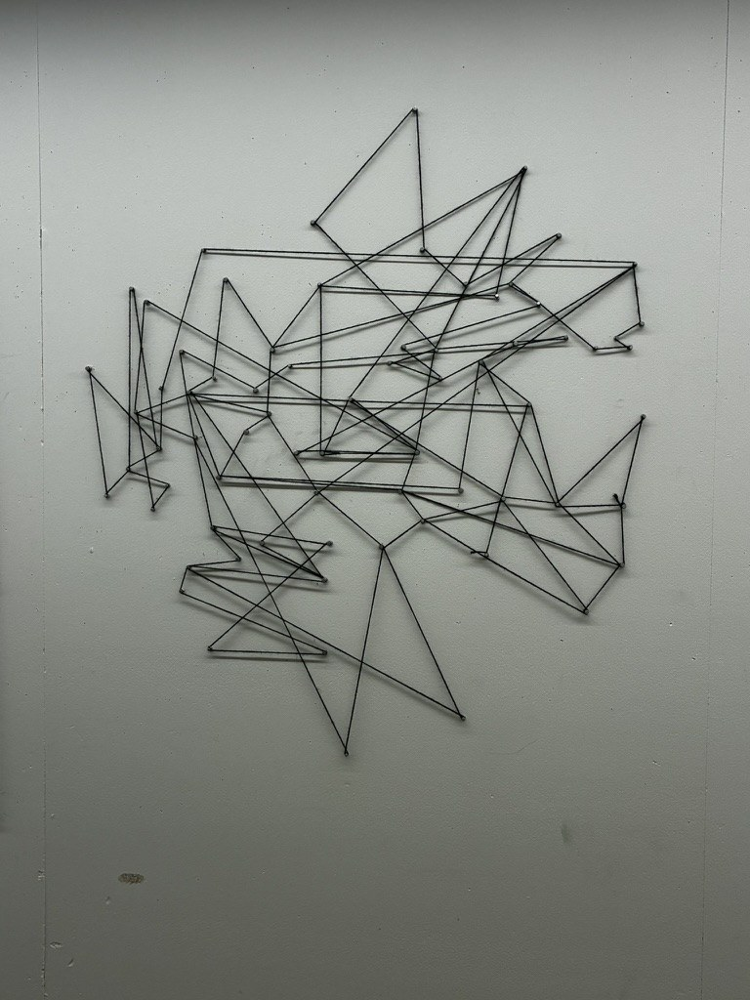

Artist / Sculptor · Dallas, Texas
INCIsrael NavonCovarrubias
Working across sculpture, painting, drawing, and mixed media. A practice shaped by ideas, materials, experience, and the questions that follow.

01 / Portfolio
Selected work
A selection across sculpture, painting, drawing, and mixed media.